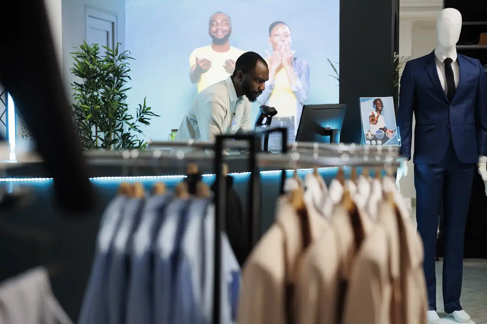

Infraestructura TI
Modernización tecnológica para empresa logística
Implementamos monitoreo, respaldos automatizados y soporte híbrido para mejorar continuidad operativa.
Empresas que han optimizado su infraestructura tecnológica gracias a nuestras soluciones TI.
Descubre cómo ayudamos a diferentes empresas a mejorar estabilidad, productividad y seguridad TI.
Implementamos monitoreo, respaldos automatizados y soporte híbrido para mejorar continuidad operativa.
Diseñamos políticas de seguridad, monitoreo preventivo y respaldos críticos para operación médica.

Centralizamos incidentes, soporte remoto y monitoreo empresarial en tiempo real.
Empresas atendidas
Nivel de satisfacción
Disponibilidad de soporte
Experiencia tecnológica
“El monitoreo preventivo y la mesa de ayuda mejoraron completamente nuestra operación.”
“La estabilidad y velocidad de respuesta del soporte superó nuestras expectativas.”
“Gracias a la implementación tecnológica logramos reducir incidentes operativos.”
Nuestro equipo está preparado para ayudarte a optimizar y fortalecer tu entorno tecnológico.
Solicitar asesoría